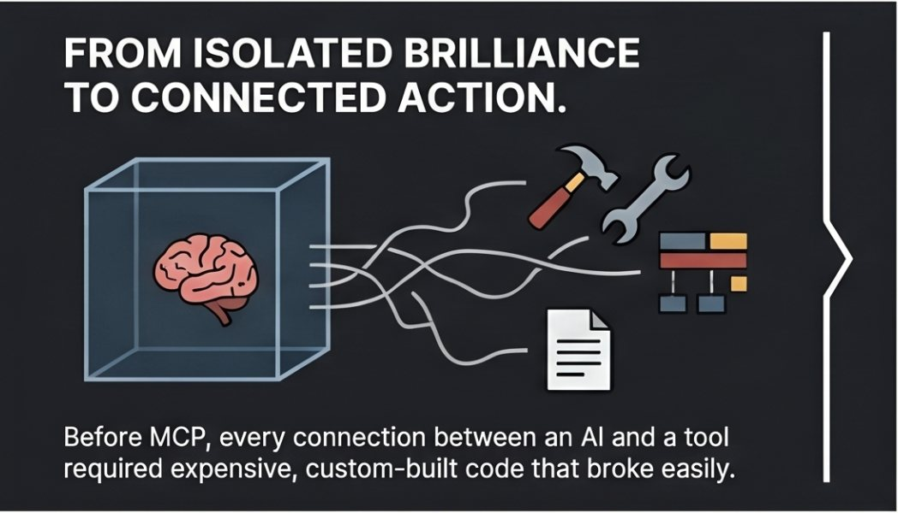
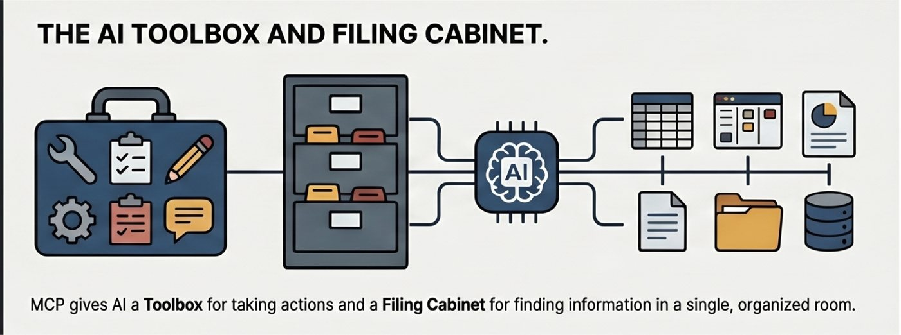
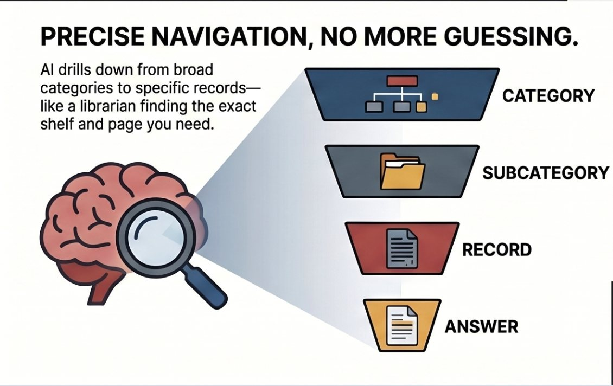
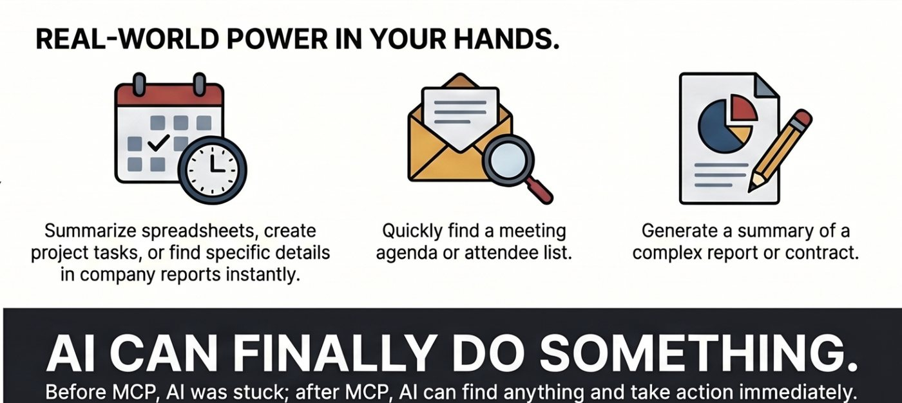
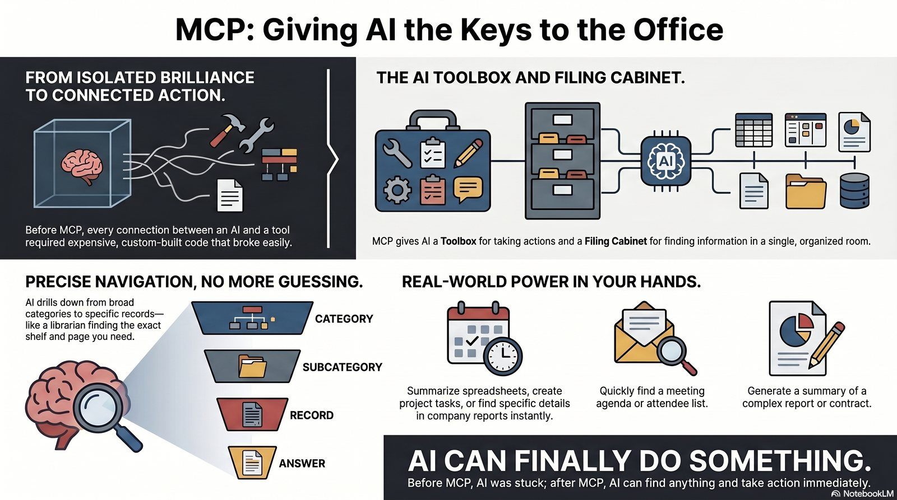

The Short Version
Think of an MCP as giving AI a toolbox and a filing cabinet in the same room. The toolbox is what the AI can do. The filing cabinet is what the AI can find.
Depending on the app, you may see the same idea called an MCP, connector, or extension. Those words can mean slightly different things in different products, but here they all point to the same basic idea: a trusted connection between an AI assistant and a useful local or remote capability.
Compass Recovery Links
If you came here from an install page, these links take you back to the public Compass pages.
Compass Suite Critical Compass Prompt Compass UX Heuristics Compass
Toolbox
The toolbox side lets AI take actions through approved tools. That might mean creating a PDF, searching an index, summarizing a file, checking a local database, or preparing a report.
Filing Cabinet
The filing cabinet side gives AI organized information to look through. Instead of guessing from a giant pile of text, it can move from category to subcategory to record to answer.
1. Before MCP: Isolated Brilliance

Before MCP, every connection between an AI assistant and a tool often needed custom code. That made useful integrations expensive, fragile, and hard for regular people to install or trust.
2. MCP Creates a Shared Room

An MCP creates a shared room where the AI can see what tools and information are available. The AI still needs permission and a clear task, but it no longer has to guess where everything lives.
3. Precise Navigation, Not Guessing

A good MCP helps the AI narrow the search. It can move from a broad category to a specific record, like a librarian finding the right shelf, folder, page, and answer.
4. Real-World Power

That connection lets AI do practical work: summarize spreadsheets, find meeting details, review reports, create tasks, generate documents, or use a specialized Compass tool.

MCP Risks: What to Watch For
MCPs can be local or remote, and they are powerful because they can give an AI access to tools or selected information. That is why you should treat an unknown MCP like any downloaded software or connected service.
Possible risks include malicious code, unexpected file access, hidden external API calls, broad permissions, or prompt injection inside connected files and tools. Install MCPs only from trusted sources, and review what they can access before using them on private or sensitive work.
- Check whether the MCP runs locally, connects to a remote server, or does both.
- Look for API keys, paid services, broad file access, or unexpected network calls.
- Ask Claude, Codex, or a trusted technical reviewer to inspect the files if you are unsure.
- Prefer clear, narrow tools that explain what they access and why.
Free Safety Check Skill and Prompt
Safe Install Review is a small reusable skill for asking an AI assistant to inspect an app, MCP, plugin, package, command, repo, or checksum before you install or run it. It is a practical risk review, not a formal security audit or guarantee.
SHA-256: 83d6b578ac06e02bd93fcd635820c93ab04ebd2644f0ec0d305b7623d88d8bf8
Copy-and-paste security check prompt
Use this prompt with Claude, Codex, ChatGPT, or another assistant before running a download, install command, package, repo, plugin, or MCP.
Diving Deeper: What files might I see inside an MCP?
An MCP package can look strange if you are not used to developer files. These are common file types and what they usually mean:
.json: settings, manifests, tool definitions, or structured data..yaml/.yml: configuration written in a human-readable format..py,.ts,.js: code that may run MCP tools..md: instructions, documentation, prompts, or reference text..csv: spreadsheet-like table data..sql,.sqlite,.db: database queries or bundled local databases and indexes..env: secret or machine-specific settings. Public bundles should not include these.
Quick FAQ
Can an MCP be local or remote?
Yes. Some MCPs run on your computer through stdio. Others connect over HTTP to a remote server. Some products support both patterns.
Is an MCP the same as a plugin or skill?
No. An MCP is the tool-and-context connection. A plugin can bundle MCPs, skills, and other pieces together. A skill is usually instructions or reference material the AI can read.
What should I check before installing one?
Check the source, what files it can access, whether it makes network calls, whether it needs secrets or API keys, and whether sensitive actions require your confirmation.
For technical readers, the official MCP docs describe JSON/schema-based messages, tools, resources, HTTP authorization, and stdio transport behavior: MCP basics and MCP tools.
How This Applies to the Compass Suite
The Compass Suite uses the MCP idea to give AI focused local toolboxes and bundled filing cabinets for specific kinds of work. Each Compass keeps its own scope: Critical Compass audits claims and reasoning, Prompt Compass improves prompts, UX Heuristics Compass reviews interfaces, and future Compasses add their own bounded capabilities.